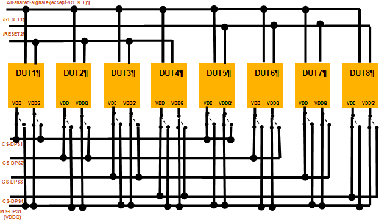

SharedIDD test method
The SharedIDD test method measures IDD and IDDQ on shared load boards. It can measure either value or both.
If you require greater control over test details than this test method offers, you can also develop your own shared IDD test method with either the SHARED_IDD_TEST API, or the MTP_IDD_TASK API.
For the detailed differences between the three methodologies, see MTP_IDD_TASK.
Test methodology
IDD and IDDQ measurements are made separately. In each case, four sites are measured at a time. The procedure below describes measuring IDD for sites 1-4; IDD for sites 5-8 and IDDQ are measured in a similar way.
SharedIDD measurements require RESETn signals to low-activate DUT1-DUT4 to make sure that the maximum power of 4 A that MS-DPS can be provided is not exceeded.

IDD is measured with CS-DPS. In the given pin configuration, VDD binds the CS-DPS, so measurements are made via VDD:
- It switches the utility lines to select sites 1, 2, 3, and 4.
Each site‘s VDD is now supplied by a different CS-DPS channel, so that VDD is non-shared.
- It sets the site focus to the non-selected sites 5, 6, 7, and 8.
- Using the PPMU, it forces 0 V for the RESET pin to keep it always active.
- It restores the site focus to all sites.
- It runs the pattern.
- It measures the VDD current on sites 1-4 in parallel.
- It stops the pattern execution and disconnects.
- It sets the site focus to sites 5, 6, 7, and 8.
- It opens the PPMU relay to restore the drive level of RESET.
- It switches the utility line back to its default state.
IDD for other sites and IDDQ are measured in a similar way.
Functional changes
- Introduced in MTP 3.0.1
- MTP 3.1.3: Adeed new API: SHARED_IDD_TEST.
- MTP 3.1.5: Adeed new API: MTP_IDD_TASK.